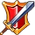

In the Guild Hall you can see the list of current guild members, the level of the guild, the current/maximum number of members, the total power of all members, the guild description, the join requirements and the list of current applications. The guild leader and the guild officers can also manage the guild here.
Member Ranks
There are four member ranks with the following privileges:
| Icon | Rank | Privileges |
|---|---|---|
| Guild leader |
| |
 |
Officer |
|
| Member |
| |
| Rookie |
|
{kind=link}
{kind=link}
If the guild leader is inactive for longer than a week and if there are no active officers in the guild, an active member gets promoted to officer. If the guild leader is inactive for longer than 20 days, an active officer gets promoted to guild leader. Any guild member who is inactive for more than 30 days gets kicked from the guild unless he is the sole guild leader. Players are considered active if they logged into the game in the last three days.
On a new game server while there is an ongoing competition event, when the guild leader is inactive an active member is promoted to officer in 2 days instead of 7 days and an active officer is promoted to guild leader in 5 days instead of 20 days.
Member List
The member list shows the rank and character level for each guild member. Members of the same rank are sorted by level. By selecting a member, you can promote, demote, inspect or kick the member if you have the corresponding privilege. Each member can set a personal note that is visible when the member is selected. The guild leader can also transfer the guild leadership to another member here. If the guild leader leaves the guild, the second highest member on the list becomes the new leader.
Applications
All guild members can see the list of current applicants to join the guild and inspect them. Only players who meet the current power and character level requirements of the guild can apply. The guild leader and the guild officers can accept or decline applications and set the join requirements.
Guild Level
The guild level is determined by the amount of tree xp in the guild Tree of Life. A new guild has level 1. The upgrade cost starts at 59,580 tree xp for level 2 and increases by 5,985 xp per level.
| Level | XP requirement | Level | XP requirement | Level | XP requirement |
|---|---|---|---|---|---|
| 1 | 0 | 11 | 865,125 (+113,445) | 21 | 2,328,750 (+173,295) |
| 2 | 59,580 (+59,580) | 12 | 984,555 (+119,430) | 22 | 2,508,030 (+179,280) |
| 3 | 125,145 (+65,565) | 13 | 1,109,970 (+125,415) | 23 | 2,693,295 (+185,265) |
| 4 | 196,695 (+71,550) | 14 | 1,241,370 (+131,400) | 24 | 2,884,545 (+191,250) |
| 5 | 274,230 (+77,535) | 15 | 1,378,755 (+137,385) | 25 | 3,081,780 (+197,235) |
| 6 | 357,750 (+83,520) | 16 | 1,522,125 (+143,370) | 26 | 3,285,000 (+203,220) |
| 7 | 447,255 (+89,505) | 17 | 1,671,480 (+149,355) | 27 | 3,494,205 (+209,205) |
| 8 | 542,745 (+95,490) | 18 | 1,826,820 (+155,340) | 28 | 3,709,395 (+215,190) |
| 9 | 644,220 (+101,475) | 19 | 1,988,145 (+161,325) | 29 | 3,930,570 (+221,175) |
| 10 | 751,680 (+107,460) | 20 | 2,155,455 (+167,310) | 30 | 4,157,730 (+227,160) |
| ... | ... | ... | ... | ... | ... |
The guild level determines the Guild Perks and the Guild Banner.
Guild Spirit
The spirit level of the guild is determined by the spirit of all guild members together. Spirit is obtained by unlocking and upgrading beasts. Spirit level 2 requires 5000 total spirit from all guild members. For each subsequent spirit level the levelup requirement increases by 1 spirit per level.
A member will stop contributing their Spirit to the guild spirit if they are offline for 10 days or longer.
Each spirit level increases one of All Attributes, Raining Gold and Firestone Finder for all guild members multiplicatively by 10% in the following fashion:
| Spirit Level | All Attributes | Raining Gold | Firestone Finder |
|---|---|---|---|
| 1 | |||
| 2 | 100% | ||
| 3 | 100% | ||
| 4 | 100% | ||
| 5 | 100% | ||
| 6 | 100% | ||
| 7 | 100% | ||
| ... |
Guild Log
The last 50 guild actions are logged in the guild log. The following actions are logged:
- Promotions and demotions of guild members
- Joining, leaving and kicking of guild members
- Guild tree upgrades and level-ups
- Guild level-ups
- Arcane crystal breakings and upgrades
- Rank changes due to inactivity (leader and officer)
- Guild leader leaving the guild
- Increase/decrease Spirit Level
Guild actions are also deleted after 7 days.